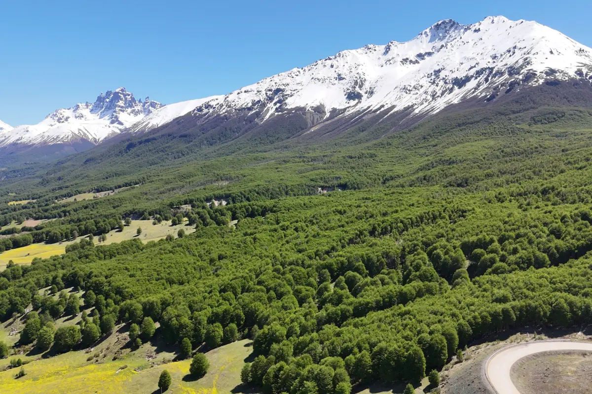
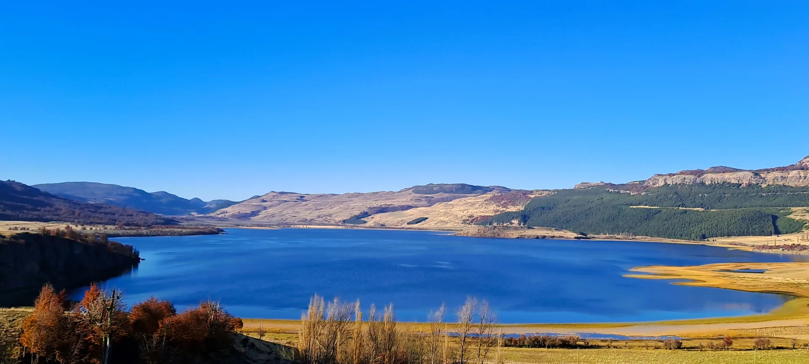
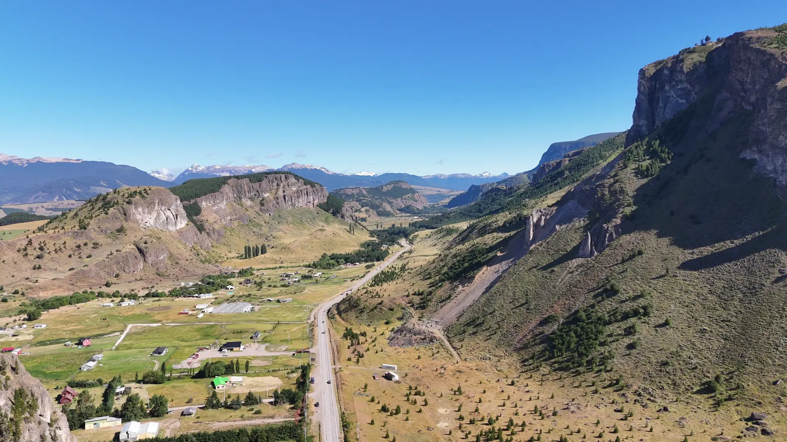

…

Hiking
Hiking in Aysén: Cerro Castillo, Queulat and more
Cerro Castillo circuit, Queulat Hanging Glacier and trails near Coyhaique: seasons and bookings.
Keep reading
More Patagonia guides

Getting there
How to get to Coyhaique: flights, airport and roads
Flights to Balmaceda, Coyhaique's airport project, distances and routes to reach the capital of Aysén Patagonia.
Read guide →
Must see
Marble Caves of Chile: how to visit them
How to reach the Marble Chapels on Lake General Carrera, boat and kayak tours, best season and tips.
Read guide →
Scenic route
Carretera Austral: Chile's most beautiful road trip
Sections, highlights near Coyhaique, road conditions and tips for driving Route 7.
Read guide →